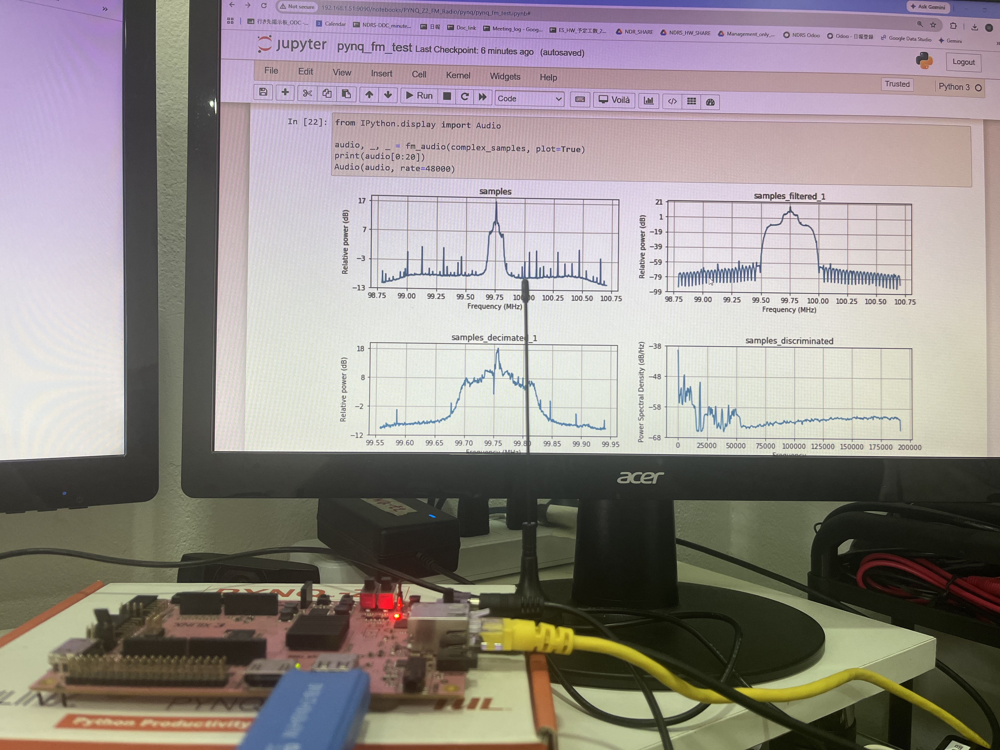
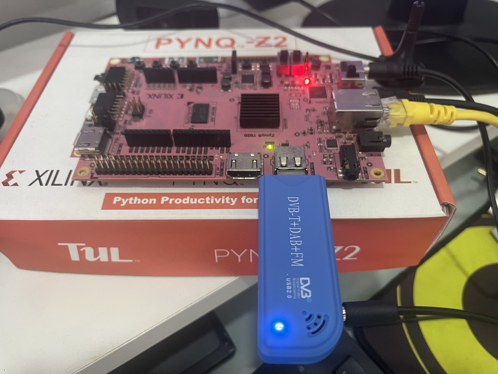
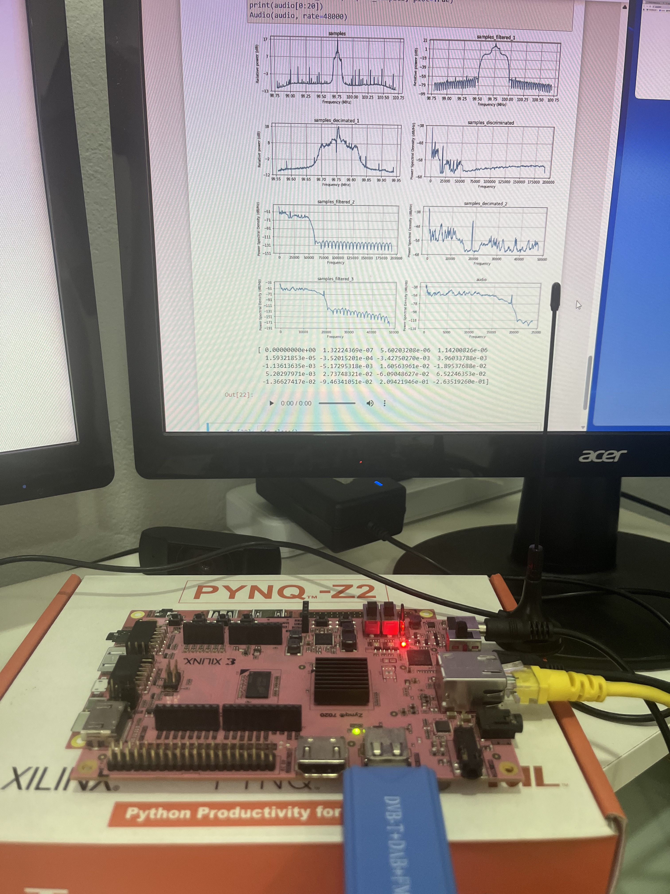
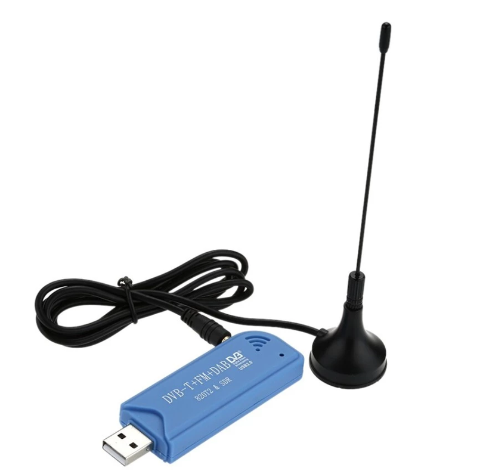
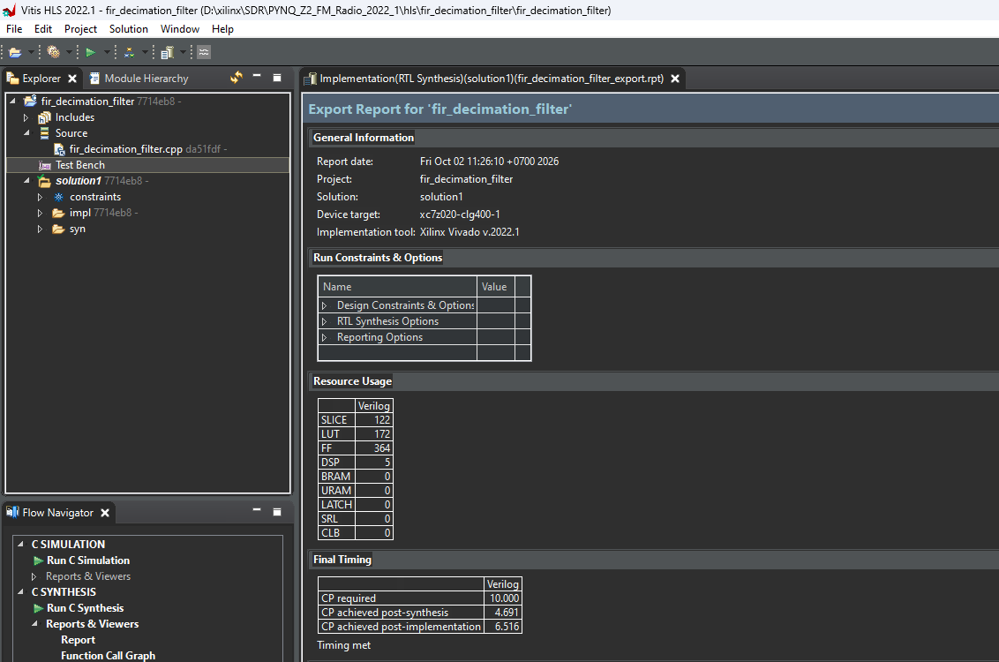
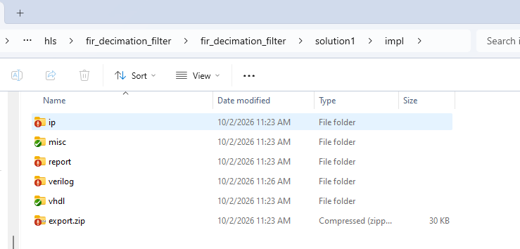
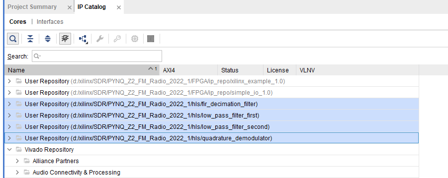
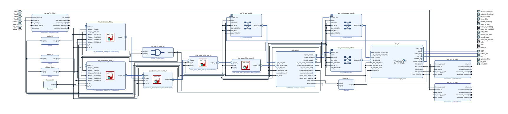
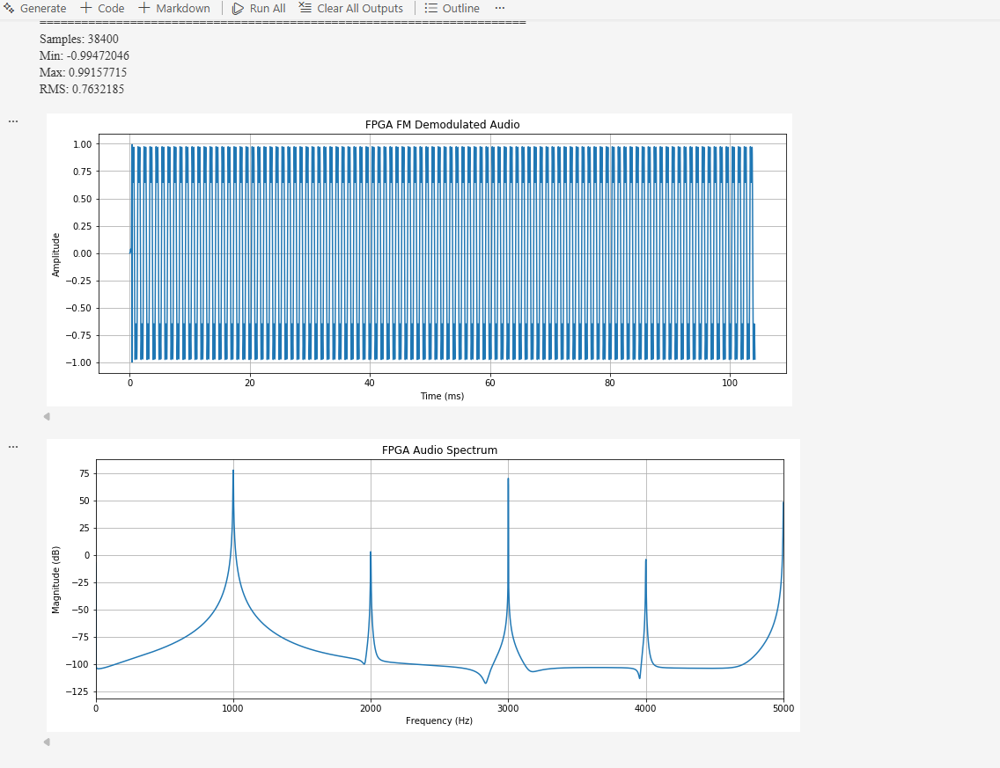
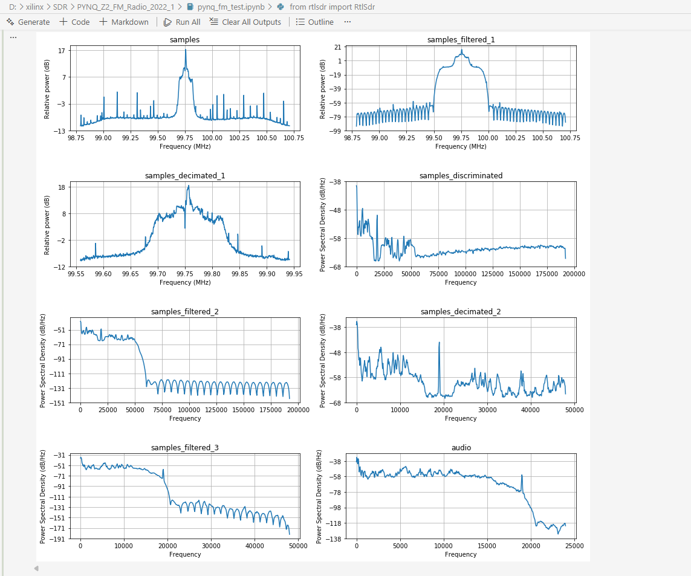

1 Pynq-Z2 FM Radio: FM Demodulation with FPGA + RTL-SDR
I recently came across an intriguing open-source project: PYNQ_Z2_FM_Radio and decided to replicate it. This project offloads FM demodulation to an FPGA: receiving raw RF signals from an inexpensive RTL-SDR USB dongle and letting the FPGA execute the entire DSP pipeline to output crystal-clear FM audio. It serves as a fantastic real-world example of FPGA-accelerated Software Defined Radio (SDR).
Hardware and Software Tools Used:
- Hardware: PYNQ-Z2 Board, RTL-SDR USB dongle
- Toolchain: Vitis HLS + Vivado 2022.1
- PYNQ Image: Version 2.7
The RTL-SDR USB dongle can be easily purchased online (e.g. Shopee / AliExpress) — it is the generic DVB-T USB tuner dongle.




2 System Architecture & Concept
The system partitions tasks between the ARM CPU (Python on PYNQ) and the FPGA fabric as follows:
| Step | Description | Executed On |
|---|---|---|
| 1 | RTL-SDR captures FM RF signals and converts them to IQ samples; CPU pulls data via USB | CPU (Jupyter Notebook) |
| 2 | CPU (Python) reads raw bytes from USB and writes into DDR memory | CPU (Jupyter Notebook) |
| 3 | FPGA reads IQ buffer from DDR via AXI DMA (MM2S) into fir_decimation |
FPGA |
| 4 | Hardware DSP chain: FIR decimation → Quadrature demodulation → Low-pass filter 1 → Low-pass filter 2 | FPGA |
| 5 | Demodulated audio stream is streamed back into DDR via AXI DMA (S2MM) | FPGA |
| 6 | CPU reads audio buffer from DDR and plays back sound | CPU (Jupyter Notebook) |
Decimation is the process of reducing the sampling rate by keeping only every N-th sample and discarding the rest (÷N). For example, ÷5 keeps 1 out of 5 samples, decreasing the sample rate by 5x. In this project, decimation downsamples the stream from 1.92 MS/s down to the standard audio rate of 48 kHz.
flowchart TB
RTL["USB RTL-SDR"]
CPU["CPU / Python"]
DDR[("DDR")]
DMA["AXI DMA
Vivado Block Design"]
FIR_I["FIR Decimation I"]
FIR_Q["FIR Decimation Q"]
DEMOD["Quadrature Demodulate"]
LPF1["Low Pass Filter 1"]
LPF2["Low Pass Filter 2"]
RTL -->|"USB / USB driver"| CPU
CPU -->|"CPU writes IQ buffer"| DDR
DDR -->|"MM2S"| DMA
DMA --> FIR_I
DMA --> FIR_Q
FIR_I --> DEMOD
FIR_Q --> DEMOD
DEMOD --> LPF1
LPF1 --> LPF2
LPF2 -->|"AXI4-Stream"| DMA
DMA -->|"S2MM"| DDR
DDR -->|"CPU reads audio buffer"| CPU
classDef ext fill:#fff3e0,stroke:#fb8c00,stroke-width:2px,color:#000
classDef cpu fill:#e3f2fd,stroke:#1e88e5,stroke-width:2px,color:#000
classDef mem fill:#ede7f6,stroke:#7e57c2,stroke-width:2px,color:#000
classDef fpga fill:#e8f5e9,stroke:#43a047,stroke-width:2px,color:#000
class RTL ext
class CPU cpu
class DDR mem
class DMA,FIR_I,FIR_Q,DEMOD,LPF1,LPF2 fpga
2.1 Sample Rate at Each Processing Stage
The RTL-SDR dongle transmits IQ samples at 1.92 MS/s. The pipeline decimates the rate down to 48 kHz (total 40x decimation factor):
| Stage | Decimation | Output Sample Rate | Interface | Function |
|---|---|---|---|---|
| RTL-SDR (input) | - | 1.92 MS/s | 8-bit IQ | Captures RF signal and streams 8-bit IQ samples to CPU via USB |
| FIR Decimation Filter | ÷5 | 384 kHz | AXI4-Stream 8-bit → 32-bit | Low-pass filters out-of-band noise and decimates rate by 5x |
| Quadrature Demod | ÷1 | 384 kHz | 2× AXI4-Stream (I, Q) → 1 stream | Performs FM demodulation (extracts baseband audio from IQ) |
| Low Pass Filter 1st | ÷4 | 96 kHz | AXI4-Stream 32-bit fixed-point | Low-pass audio filtering and decimates rate by 4x |
| Low Pass Filter 2nd | ÷2 | 48 kHz | AXI4-Stream 32-bit → 16-bit | Final low-pass audio stage, decimates by 2x to 48 kHz and converts to 16-bit |
2.2 Division of Responsibilities
| Subsystem | Role |
|---|---|
| CPU (ARM Cortex-A9) | Reads IQ data from RTL-SDR over USB (pyrtlsdr), writes to DDR, configures DMA, plays audio |
| FPGA (AXI DMA) | MM2S: DDR → FPGA input stream / S2MM: FPGA output stream → DDR |
| FPGA (HLS Cores) | FIR decimation → Demodulation → LPF1 → LPF2 |
The heaviest DSP computational burden (filtering 1.92 MS/s continuous stream) is offloaded entirely to FPGA hardware logic in real-time, leaving the CPU completely free from heavy mathematical workloads.
3 Implementation Walkthrough
The development workflow consists of two primary stages: synthesizing C++ algorithms into IP cores with Vitis HLS, and assembling them in Vivado Block Design to generate the bitstream.
3.1 High-Level Synthesis (Vitis HLS)
Open the Vitis HLS command prompt and execute vitis_hls TCL scripts to synthesize C++ code into hardware IP cores.
The repository contains 4 distinct HLS IP modules inside the hls/ directory:
| Directory | Generated IP Core | Function |
|---|---|---|
fir_decimation_filter |
FIR Decimation | Low-pass filter + Decimate ÷5 |
quadrature_demodulator |
Quadrature Demodulator | FM Demodulation |
low_pass_filter_first |
LPF 1st | Audio LPF + Decimate ÷4 |
low_pass_filter_second |
LPF 2nd | Audio LPF + Decimate ÷2 |
Synthesis command execution snippet for fir_decimation_filter:
===============================
== Vitis HLS Command Prompt
== Available commands:
== vitis_hls,apcc,gcc,g++,make
===============================
Microsoft Windows [Version 10.0.22631.6199]
(c) Microsoft Corporation. All rights reserved.
D:\>cd xilinx\SDR\PYNQ_Z2_FM_Radio_2022_1\hls\fir_decimation_filter
D:\xilinx\SDR\PYNQ_Z2_FM_Radio_2022_1\hls\fir_decimation_filter>vitis_hls fir_decimation_filter.tcl
****** Vitis HLS - High-Level Synthesis from C, C++ and OpenCL v2022.1 (64-bit)
**** SW Build 3526262 on Mon Apr 18 15:48:16 MDT 2022
**** IP Build 3524634 on Mon Apr 18 20:55:01 MDT 2022
** Copyright 1986-2022 Xilinx, Inc. All Rights Reserved.
source C:/Xilinx/Vitis_HLS/2022.1/scripts/vitis_hls/hls.tcl -notrace
...Upon completion, reviewing the synthesis report reveals hardware resource utilization (BRAM, DSP48E, FF, LUT):

Exported packaged IP cores reside in solution1 → impl → ip, ready for Vivado integration.

3.2 Vivado Block Design
Add the custom HLS IP repository into the Vivado IP Catalog:

Create a Block Design and interconnect the following modules:
- ZYNQ7 Processing System
- AXI Direct Memory Access (DMA) (MM2S & S2MM enabled)
- 4 HLS IP Cores chained via AXI4-Stream according to the architecture diagram
Connect the block design as shown below:

Run Synthesis -> Implementation -> Generate Bitstream, then copy the resulting .bit and .hwh overlay files to the PYNQ board.
4 Testing and Verification
4.1 Software Setup on PYNQ-Z2
Before running RTL-SDR, install necessary drivers and Python libraries in the PYNQ Linux terminal:
sudo apt-get update
sudo apt-get install librtlsdr-dev rtl-sdr
echo "blacklist dvb_usb_rtl28xxu" | sudo tee /etc/modprobe.d/blacklist-rtl.conf
sudo pip3 install "pyrtlsdr<3"
sudo reboot- The
blacklistprevents default DVB-T TV kernel drivers (dvb_usb_rtl28xxu) from monopolizing the USB dongle. - Version constraint
pyrtlsdr<3ensures full compatibility with PYNQ v2.7 Python 3.6 environment.
4.2 Hardware Loopback Test with Test Data
Verify that the FPGA DSP pipeline functions correctly by streaming synthetic test vectors into the FPGA DMA and evaluating the response using this Jupyter Notebook:
The resulting FFT spectrum and time-domain signal output:

4.3 Live FM Reception with RTL-SDR
Once hardware verification is confirmed, stream live over-the-air RF data from RTL-SDR directly into the FPGA demodulator using:
Live capture results:

For real-time continuous streaming audio playback, run the streaming notebook:
pynq_fm_streaming.ipynb on GitHub
5 Frequency Capabilities & Tuner Information
Inspecting the connected RTL-SDR USB dongle reveals the Fitipower FC0012 tuner chip:
Found 1 device(s):
0: Realtek, RTL2838UHIDIR, SN: 00000001
Using device 0: Generic RTL2832U OEM
Found Fitipower FC0012 tuner
Supported gain values (5): -9.9 -4.0 7.1 17.9 19.2
Sampling at 2048000 S/s.
No E4000 tuner found, aborting.According to the Osmocom RTL-SDR Wiki, the FC0012 tuner operates across approximately 22–948.6 MHz:
| Approx. Frequency | Signal Type | RF Tuner Support |
|---|---|---|
| 88–108 MHz | FM Broadcast | Supported |
| 118–137 MHz | Aircraft / Airband | Supported |
| 144–148 MHz | 2m Amateur Radio | Supported |
| 150–174 MHz | VHF communication | Supported |
| 162 MHz | AIS Marine Tracking | Supported |
| 174–240 MHz | DAB / DAB+ Band III | Supported |
| 400–470 MHz | UHF radio | Supported |
| 433 MHz | IoT / Remote / Sensors | Supported |
| 868 MHz | LoRa / IoT Europe | Supported |
| 915 MHz | LoRa / ISM US | Supported |
| 948.6 MHz | Tuner Upper Limit | Edge Limit |
| 1090 MHz | ADS-B Flight Tracking | Out of Band |
| 1575 MHz | GPS L1 | Out of Band |
| 2.4 GHz | Wi-Fi / Bluetooth | Out of Band |
Note: When using the bundled small telescopic antenna, RF reception sensitivity is mostly optimal for strong local FM broadcast stations.
6 Summary & Conclusion
This experiment demonstrates the power of heterogeneous FPGA-SoC architectures: high-throughput DSP filtering (1.92 MS/s) is accelerated in FPGA hardware fabric in real-time, while Python on the ARM core orchestrates high-level I/O via PYNQ. Combining a budget RTL-SDR dongle with PYNQ-Z2 yields a highly capable, flexible SDR receiver platform.
Access the full project source files, notebooks, and bitstreams here: https://github.com/wichayen/pynq_z2/tree/main/RTL_USB_FM_demodulation
7 References
- PYNQ_Z2_FM_Radio: https://github.com/hyojun01/PYNQ_Z2_FM_Radio
- fm-demod-rtlsdr-pynqz2: https://github.com/hfwang132/fm-demod-rtlsdr-pynqz2
- PYNQ Project: http://www.pynq.io/
- RTL-SDR Community: https://www.rtl-sdr.com/